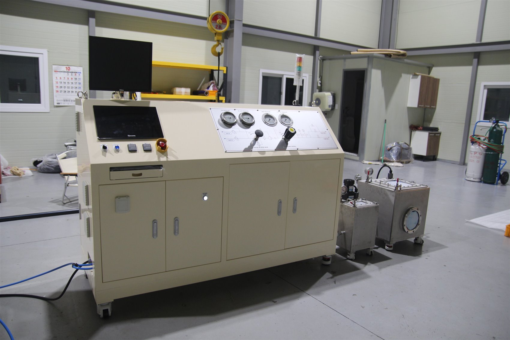
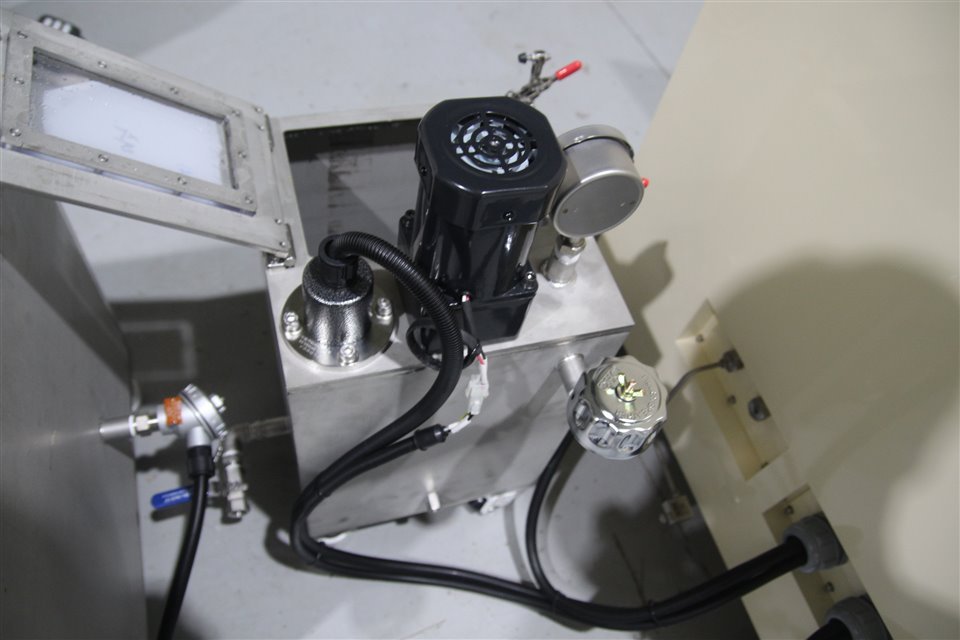
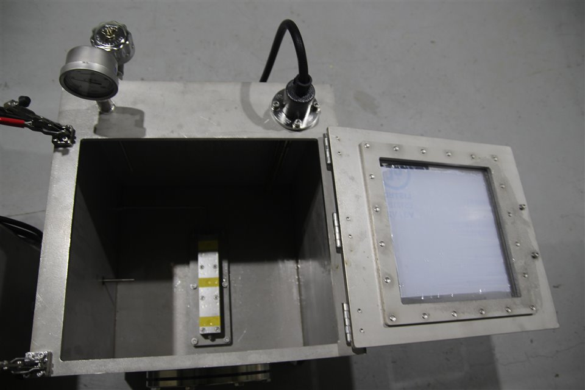

BUFFER TANK
고압버퍼탱크
고압 매체를 일시 저장해 공급 변동을 완화합니다.
설비 사양 보기TESFAC / PRESSURE SYSTEMS
내압·파열·기밀 시험부터 고압 저장과 수동 가압까지. 테스팩의 설비와 기술 안내를 한곳에서 확인하세요.
설비 둘러보기
PRODUCTS
시험설비에 들어가는 고압 버퍼탱크와 안전챔버는 국내외 규격과 안전기준 설계 계산과 구조해석을 통해 제작하고 공급하고 있습니다.
테스팩은 고압의 원격 및 안전화를 위해 자동화 시험설비를 중심으로 만들지만, 압력시험을 보다 쉽게 시작하고 적응 할 수 있도록 수동가압설비(수동가압장비+자동측정시스템)도 제작,공급합니다.
또한 압력시험이 필요한 소형 제품의 내압, 기밀 또는 파열시험 등을 확인해야 할 때는 테스팩의 시험설비로 압력의뢰시험이 가능합니다.
현장에서 쌓은 기술과 경험을 바탕으로, 국내 산업이 고압 기술 경쟁력을 높이고 더 안전하게 발전하는 데 보탬이 되고자 합니다.
EQUIPMENT
BUFFER TANK
고압 매체를 일시 저장해 공급 변동을 완화합니다.
설비 사양 보기
MANUAL PRESSURIZATION
작업자가 수동 펌프를 조작해 시험 회로에 압력을 형성합니다.
설비 사양 보기
PROOF TEST
정해진 시험압력에서 시험체의 구조적 건전성을 확인합니다.
설비 사양 보기
LEAK TEST
정해진 조건에서 시험체의 누설 여부를 확인합니다.
설비 사양 보기
BURST TEST
시험체가 파손되는 압력과 파손 양상을 기록합니다.
설비 사양 보기
STRUCTURAL ANALYSIS
시험 조건에 따른 하중과 차폐 구조를 검토합니다.
설비 사양 보기CONTACT
필요한 설비명과 시험 대상, 목표 압력을 문자로 보내 주세요.